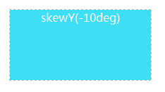
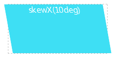
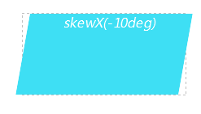
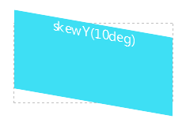
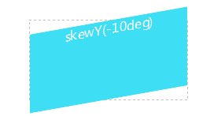
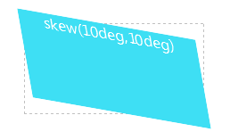
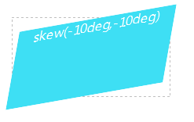

语法：
transform:skew(x,y) | skewX(x) | skewY(y)
说明：
skew()将元素倾斜显示
（1）skewX(x)：使元素在水平方向倾斜（X轴倾斜）；x表示元素在X轴倾斜的度数，单位为deg；如果度数为正，表示元素沿水平方向（X轴）顺时针倾斜（向左倒）；如果度数为负，表示元素沿水平方向（X轴）逆时针倾斜（向右倒）。
（2）skewY(y)：使元素在垂直方向倾斜（Y轴倾斜）；y表示元素在Y轴倾斜的度数，如果度数为正，表示元素沿垂直方向（Y轴）顺时针倾斜；如果度数为负，表示元素沿垂直方向（Y轴）逆时针倾斜。
（3）skew(x,y)：第一个参数对应X轴，第二个参数对应Y轴。如果第二个参数未提供，则值为0，也就是Y轴方向上无斜切。
使用方法：
transform:skewX(10deg);; /*水平方向顺时针倾斜10度*/
兼容性：
- 浅绿 = 支持
- 红色 = 不支持
- 粉色 = 部分支持
| 支持版本\类型 | IE | Firefox | Safari | Chrome | Opera |
|---|---|---|---|---|---|
| 版本 | 6-8 | 4-18 | 5.1.7 | 13-23 | 11.5-12.5 |
| 版本 | 9-10 |
ie9 以上，和高版本浏览器。不过transform都要加上对应的前缀，-o,-moz,-webkit,-ms
Internet Explorer 10、Firefox、Opera 支持 transform 属性。
Internet Explorer 9 支持替代的 -ms-transform 属性（仅适用于 2D 转换）。
Safari 和 Chrome 支持替代的 -webkit-transform 属性（3D 和 2D 转换）。
Opera 只支持 2D 转换。
事例：
skewX(x)
div{
width:200px;
height:100px;
color:white;
background-color: #3EDFF4;
text-align:center;
transform:skewX(10deg);
-webkit-transform:skewX(10deg); /*兼容-webkit-引擎浏览器*/
-moz-transform:skewX(10deg); /*兼容-moz-引擎浏览器*/
}



